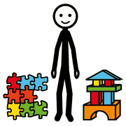
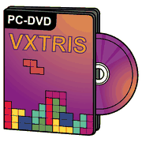

Modulo 11, coinvolgere e innovare
Gamification e game-based learning
Due modi diversi di usare il gioco a scuola: aggiungere elementi di gioco a un'attività, oppure imparare dentro un gioco vero.
si impara
giocando
Game-based learning

giocare imparare
imparare
videogiocoSi usano giochi completi progettati per imparare: l'apprendimento avviene dentro l'esperienza di gioco. È un ambiente sicuro in cui sperimentare, sbagliare e riprovare.
Simulazioni
Ambienti virtuali per provare situazioni reali.
Giochi di ruolo
Ci si immerge in personaggi e scenari.
Il confronto
 uguale
uguale diverso
diverso pensare
pensare| Gamification | Game-based learning | |
|---|---|---|
| Obiettivo | Motivazione e partecipazione costante | Apprendimento attivo, competenze, problem solving |
| Punti di forza | Flessibile, economica, riscontro immediato | Apprendimento profondo e duraturo, pensiero critico |
| Quando usarla | Attività ripetitive, obiettivi precisi | Concetti complessi, simulazioni, situazioni realistiche |
| Funziona se | Obiettivi chiari, regole semplici, premi che contano | Giochi ben progettati e sfidanti |
attenzione!
Gli strumenti
 tablet
tablet domandagioco
domandagiocoKahoot!, Quizizz, Panquiz, Google Moduli
In sintesi
imparare contento
contentoLa scelta dipende da obiettivi, contesto e classe. La gamification sostiene la motivazione nelle attività ripetitive; il game-based learning porta a un apprendimento più profondo e a competenze pratiche. Ben progettati, entrambi rendono l'esperienza più coinvolgente.